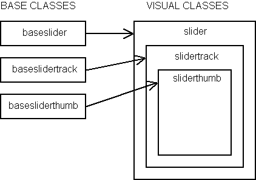
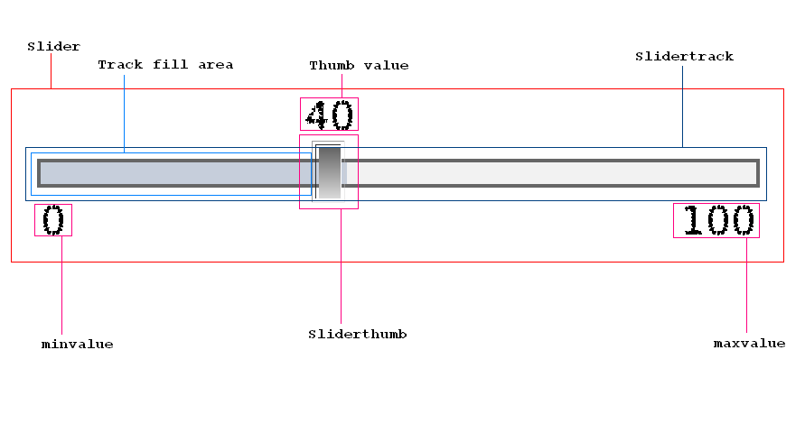

Designing Custom Components
A component is a reusable class that is typically simple and easy to
use. Examples of a few components that ship with Laszlo are button, window, and
tabslider. The standard shipping components can be found in the
lps/components directory.
This chapter assumes you know how to use the Laszlo components, have a good
understanding of Laszlo classes, know how to include resources, and are
well-versed in LZX.
Base components and LZ components
There are two types of standard components: base components and
lz components. Base components are generally non-visual, abstract classes. Lz
components are visual classes that ship with art assets and maintain a
particular look and feel.
This division in classes exists so that you can create a subclass that has
complete control over the look and feel of the component, yet still leverage
common behavior. Occasionally you will want to define
views
and
interaction behavior that is inherited. For example: the windowpanel class
is extended by window, alert and modal dialog.
An lz component should be subclassed if the look and feel matches the custom
component desired. Minor changes to methods and adding new views should be
straightforward. For example: you would sublass lz classes, if you want a class
for a frequently used icon button or a specific kind of listitem. Subclass
a base
component
if a
complete
different look and feel
is wanted and/or the functionality is extensively different than one can
find in the lz classes.
Ideally, when writing a complex custom component, it's best that as much of
the non-visual behaviors be implemented in a base class. Visible views and
functions that are applied specifically to those views should go into an visual
component class. While this can seem a lot fo extra effort, it promotes base
class
reusability by allowing subclasses to create different looks while maintaining
the same functionality. For examples, compare base/basebutton.lzx
to lz/button.lzx and base/baselist.lzx
to lz/list.lzx.
Deciding what base component to subclass
A big part of implementing a custom component is understanding how it's going
to be used. Is it part of a list? Will it hold a value? This section describes
how to decide which base class a custom component should use.
There are four basic types of base components:
- basecomponent
- basevaluecomponent
- baseformitem
- baselistitem
- baselist
Basecomponent
basecomponent is the abstract class that all
components subclass. basecomponent applies
styles, defines an HTML text attribute, and handles focus events, to
name a few basic features. See the source code in
lps/components/base/basecomponent.lzx.
Basevaluecomponent
Subclasses of basevaluecomponent are known
to have a value property. This is the value that the item
instance represents. When the item is selected, the parent selection
group's value will be set to this
value. basevaluecomponent should be subclassed
if the component has to represent a
value. basevaluecomponent has a
getValue method that, if no value is set, it returns
the class's text as its value. Hence, the value retrieved with the
value attribute may be different from the value
that getValue returns. Because of this, most
subclasses of basevaluecomponent require that
getValue is called instead of directly accessing the
value attribute.
<canvas debug="true" height="260">
<debug height="240"/>
<include href="base/basevaluecomponent.lzx"/>
<class name="myvaluecomponent" extends="basevaluecomponent">
<method event="oninit">
Debug.write(this.name + ' text: "' + this.text + '"');
Debug.write(this.name + ' value: "' + this.value + '"');
Debug.write(this.name + ' getValue(): "' + this.getValue() + '"');
Debug.write("");
</method>
</class>
<!-- Text is inherited from basecomponent, the superclass of -->
<!-- basevalue component. -->
<myvaluecomponent name="one" text="this is the text"/>
<!-- Set the value this time. Note that value is an expression type. -->
<!-- Have to use quotes to set a string value. -->
<myvaluecomponent name="two" value="'this is the value'"/>
<!-- Set both text and value. -->
<myvaluecomponent name="three" text="this is the text"
value="'this is the value'"/>
</canvas>
Baseformitem
baseformitem is a subclass of
basevaluecomponent. Instances of
baseformitem can have their value accessed and
submitted using the form tag. Subclass
baseformitem if the custom component needs to
be accessed in a form. Examples of
baseformitem: checkbox,
radiogroup, combobox.
Note that radiobutton is a
basevalueitem not a
baseformitem, because it contributes its vaue
to a radiogroup, rather than to a
form.
Baselistitem
Another subclass of basevaluecomponent is
baselistitem. Instances of baselistitem are
typically used within a baselist. When a baselistitem instance is
selected, the parent of the instance (baselist/list) is informed of the
selection. Subclass baselistitem if the custom component should
be
accessed in a list context. Examples of baseformitem: radiobutton, tabelement, listitem.
Baselist
baselist is a subclass of baseformitem.
Typically a subclass of baselist will contribute its value to
a form (like list and combobox, although baselist is also used by any
component that manages any list of items, such as tabslider and tabs.
Writing the slider component
The slider will be used to demonstrate how to design and write a custom
component. You can find the complete code in base/baseslider.lzx and
lz/slider.lzx.
Design
First, we need to think about the different parts a slider consists of. To
drag and adjust a slider a thumb button has to exist. A slider track is needed
so it can contain the thumb that will ride on it. Finally, we need a container
to hold the track. The container will be our slider component and will pass down
attributes and styles for the track and the thumb.
The basic design of our slider will look like:

The base classes
Baseslider
The baseslider is the base component for
slider.
Framework
We'll start off by building our slider with the base (non-visual) class and
extend basevaluecomponent, since a slider contains a value.
<class name="baseslider" extends="basevaluecomponent">
</class>
Attributes
Attribute for the size of the track and thumb will be needed.
<class name="baseslider" extends="basevaluecomponent" width="200">
<attribute name="trackheight" value="8" type="number"/>
<attribute name="thumbwidth" value="10" type="number"/>
<attribute name="thumbheight" value="18" type="number"/>
</class>
The track will constrain its width to the baseslider's width and
its height to trackheight. The thumb will constrain its width and
height to the baseslider's thumbwidth and
thumbheight, respectively.
Other values that a slider will need to include:
- minvalue
- The minimum value of the slider.
- maxvalue
- the maximum value of the slider.
- showfill
- Boolean to show a filled area in the slider's track.
- showvalue
- Boolean to show a floating value text on top of the thumb when
the user drags.
- showrange
- Boolean to show the bounding min and max value range.
<class name="baseslider" extends="basevaluecomponent" width="200">
<attribute name="trackheight" value="8" type="number"/>
<attribute name="thumbwidth" value="10" type="number"/>
<attribute name="thumbheight" value="18" type="number"/>
<attribute name="minvalue" value="0" type="number"/>
<attribute name="maxvalue" value="100" type="number"/>
<attribute name="showfill" value="true"/>
<attribute name="showvalue" value="true" type="boolean"/>
<attribute name="showrange" value="true" type="boolean"/>
</class>
Methods
The slider will need to provide APIs to set and get the value as a percentage
of the range.
<class name="baseslider" extends="basevaluecomponent" width="200">
<!-- attributes begin here -->
<!-- ... -->
<!-- attributes end here -->
<!--- Sets the value for the slider that must be within min and max.
@param Number v: a number between the minimum and maximum value
for the slider. -->
<method name="setValue" args="v">
if (this.value == v) return;
// ensure in bounds
v = math.max(v,this.minValue);
v = math.min(v,this.maxValue);
this.value = v;
if (onvalue) onvalue.sendEvent();
if (!isinited) return;
_adjustThumb();
</method>
<!--- Set the value by percentage of range from min to max.
@param Number p: a percentage between the min and the max. -->
<method name="setPercentage" args="p">
var diff = this.minValue-this.maxValue;
setValue( diff*p + this.minValue );
</method>
<!--- Get the percentage of the range selected by the value.
@return Number: the percentage selected. -->
<method name="getPercentage">
return (this.value-this.minValue) / (this.maxValue-this.minValue);
</method>
<!--- adjusts the thumb location
@keywords private -->
<method name="_adjustThumb">
var perc = getPercentage();
var x = Math.round( (this.width-track.thumb.width)*perc );
track.thumb.setX(x);
</method>
</class>
The _adjustThumb method is called whenever the
value of the slider, or the percentage of the slider, changes. This
is so the thumb maintains a correct position relative to the slider's
range. baseslider assumes its subclasses will
contain a track node called track that contains a
thumb node called thumb.
Note that _adjustThumb begins with an underscore. This naming
convention indicates that the method or attribute should be considered private
to the user of the component. The value attribute is inherited from
basevaluecomponent.
Events
Now the slider needs a set of APIs to get and set its min and max
values. Components can declare events by adding a prefix of "on" with a type of
expression. For example, the event name used when the width changes is
onwidth. Initialize the event attributes to
null. Undeclared events will display a debugger warning.
<class name="baseslider" extends="basevaluecomponent" width="200">
<!-- attributes begin here -->
<!-- ... -->
<!-- Event handler when minvalue changes. -->
<attribute name="onminvalue" value="null" type="expression"/>
<!-- Event handler when maxvalue changes. -->
<attribute name="onmaxvalue" value="null" type="expression"/>
<!-- attributes end here -->
<method name="setValue" args="v">
// setValue body
</method>
<method name="setPercentage" args="p">
// setPercentage body
</method>
<method name="getPercentage">
// getPercentage body
</method>
<method name="_adjustThumb">
// _adjustThumb body
</method>
<!--- Get the minimum value of the slider.
@return Number: the minimum value. -->
<method name="getMinValue">
return this.minValue;
</method>
<!--- Get the maximum value of the slider.
@return Number: the maximum value. -->
<method name="getMaxValue">
return this.maxValue;
</method>
<!--- Set the minimum value.
@param Number v: the minimum value. -->
<method name="setMinValue" args="v">
if (this.minValue == v) return;
this.minValue = v;
if (this.onminvalue) this.onminvalue.sendEvent();
// adjust value
if (this.minValue > this.value) this.setAttribute("value",v);
_adjustThumb();
</method>
<!--- Set the maximum value.
@param Number v: the maximum value. -->
<method name="setMaxValue" args="v">
if (this.maxValue == v) return;
this.maxValue = v;
if (this.onmaxvalue) this.onmaxvalue.sendEvent();
// adjust value
if (this.value > v) this.setAttribute("value",v);
_adjustThumb();
</method>
</class>
This code structure is common when sending events:
if (this.onmaxvalue) this.onmaxvalue.sendEvent();
It only sends the event if the user of the component defines it like:
<slider onminvalue="Debug.write('minvalue:', this.minvalue)"
onmaxvalue="Debug.write('maxvalue:', this.maxvalue)"/>
init vs. oninit
The slider needs to set the position of the its thumb during
initialization. Setting the value doesn't position the thumb in the correct
location so we do this in the init method.
<class name="baseslider" extends="basevaluecomponent" width="200">
<!-- attributes begin here -->
<!-- ... -->
<!-- attributes end here -->
<method name="init">
super.init();
// have to adjust thumb once at start
_adjustThumb();
</method>
<!-- methods begin here -->
<!-- ... -->
<!-- methods end here -->
</class>
When writing a component, it's recommended that init is used
over handling the oninit event. The reason is that the order in
which oninit gets called is undefined, whereas init is
well-defined because it gets called synchronously. By writing the component using init,
any user of the component may define oninit code which is guaranteed to be called
after the component's init code. When using
init, be sure to call super.init() in the body or
the class may not initialize correctly.
Baseslidertrack
The slider track contains the thumb. The visual aspect of the track
will be discussed later. An instance of
baseslidertrack expects to be contained in a
baseslider and sets its class parent's track
attribute to itself.
<!--- Baseslidertrack expects to be within a baseslider (or its
subclass). In other words, its "classroot" should be a slider. -->
<class name="baseslidertrack" width="100%" bgcolor="0x333333"
height="${classroot.trackheight}">
<method name="init">
super.init();
classroot.track = this;
</method>
</class>
Basesliderthumb
The thumb is basically a draggable button that rides on top of a slider
track. The slider track contains the thumb.
<!--- Basesliderthumb expects to be within a baseslidertrack (or its
subclass). In other words, its "classroot" should be a
slidertrack. -->
<class name="basesliderthumb" extends="button" focusable="false"
width="${parent.classroot.thumbwidth}"
height="${parent.classroot.thumbheight}"
onmousedown="thedragstate.apply();"
onmouseup="thedragstate.remove();"
y="${(parent.height-height)/2}">
<!--- Toggles the floating value text when dragging thumb. Constrain
showvalue to baseslider's showvalue: parent is track,
parent.parent is slider container. -->
<attribute name="showvalue" value="${parent.parent.showvalue}"/>
<!--- @keywords private -->
<dragstate name="thedragstate" drag_axis="x">
<text name="t"
resize="true"
x="${classroot.width/2-width/2}"
y="-14"
text="${parent.parent.parent.value}"
visible="${classroot.showvalue}"
/>
</dragstate>
<!--- constrain to parents bounds, and adjust slider value when dragged
@keywords private -->
<method name="setX" args="x">
var boundedx = x;
if ( x > parent.getWidth()-getWidth() ) {
var constrainX = parent.getWidth()-getWidth();
boundedx = constrainX;
} else
if (parent.x > x) {
boundedx = parent.x;
}
super.setX(boundedx);
//update slider value
var perc = ( (x) / (parent.parent.width-width) );
var val = Math.round( ( (perc)*(parent.parent.maxValue-parent.parent.minValue) )
+ parseInt(parent.parent.minValue) );
//only adjust value if user is dragging or left or right key is pressed
if (thedragstate.isapplied ||
LzKeys.isKeyDown("leftarrow") ||
LzKeys.isKeyDown("rightarrow") ) {
parent.parent.setValue(val);
}
</method>
</class>
Technically speaking, basesliderthumb would not really be
considered a base component because there's no way to override its visual look
since it extends from button. By default, a
basesliderthumb is keyboard focusable because it's a
button. However, since it's really part of the
baseslider component, the basesliderthumb has this
attribute set to false.
Since basesliderthumb must be draggable, a
dragstate is declared in its body. It's applied when the mouse is
down and removed when the mouse is up.
The thumb assumes that it's contained in a baseslidertrack
(parent), which in turn is contained in a baseslider
(parent.parent). The thumb's showvalue is constrained to the
baseslider's showvalue.
The setX method sets the correct value for the slider and
ensures that the thumb is placed within the bounds of its parents'.
The lz (visual) classes

Slider
The slider is a visual subclass of
baseslider. Since it contains visual elements, this is where styles
should be applied. The _applystyle method sets the colors for the
slider's track. See the styles chapter for more information on how
styles work.
slider declares and contains an instance of
baseslidertrack or its
subclasses. baseslidertrack creates a reference
to itself (in baseslider) during
initialization.
If showrange is true, the min and max values will be shown on
the left and right sides of the slider, respectively.
<!--- a slider component allowing for easy selection of a value within a range -->
<class name="slider" extends="baseslider">
<slidertrack/>
<state apply="${classroot.showrange}">
<text y="${classroot.track.y + classroot.track.height + 2}"
text="${classroot.minvalue}"/>
<text y="${classroot.track.y + classroot.track.height + 2}" resize="true"
x="${classroot.track.x+classroot.track.width-width}"
text="${classroot.maxvalue}"/>
</state>
<!--- @keywords private -->
<method name="_applystyle" args="s">
track.setbgcolor(s.bordercolor);
track.background.setbgcolor(s.basecolor);
track.filled.setbgcolor(s.selectedcolor);
</method>
</class>
Slidertrack
An instance of slidertrack has three
views:
- background
- The background color of the track.
- filled
- The background color of the filled track area.
- thumb
- An instance of basesliderthumb that is the
draggable button of the track.
This class constrains its showfill attribute to its parent's
(slider) showfill attribute.
<!--- the inner track on which the sliderthumb rides -->
<class name="slidertrack" extends="baseslidertrack">
<!--- @keywords private -->
<attribute name="showfill" value="${parent.showfill}" type="number"/>
<view name="background" bgcolor="red"
height="${parent.height-(2*parent.classroot.bordersize)}"
width="${parent.width-(2*parent.classroot.bordersize)}"
x="${parent.classroot.bordersize}"
y="${(parent.height-height)/2}"
/>
<!-- the filled area -->
<view name="filled" bgcolor="0xff9933" opacity=".8" visible="${classroot.showfill}"
height="${parent.height-(2*parent.classroot.bordersize)}"
width="${Math.max(0,Math.min(classroot.thumb.x+classroot.thumb.width,parent.width)-
(2*parent.classroot.bordersize))}"
y="${(parent.height-height)/2}"
x="${parent.classroot.bordersize}"
/>
<sliderthumb name="thumb"/>
</class>
Sliderthumb
Since basesliderthumb already contains a borrowed look and feel
from button, sliderthumb can just extend itself from
basesliderthumb. Alternatively, the slider track could've just
declared basesliderthumb instead of sliderthumb.
<!--- the visual thumb the user drags to select a value -->
<class name="sliderthumb" extends="basesliderthumb">
</class>
Using the slider
Examine base/baseslider and lz/slider.lzx for the complete
code set.
The following example demonstrates how to use the slider component.
<canvas height="200">
<include href="lz/slider.lzx"/>
<slider x="50" y="50" value="30"/>
</canvas>